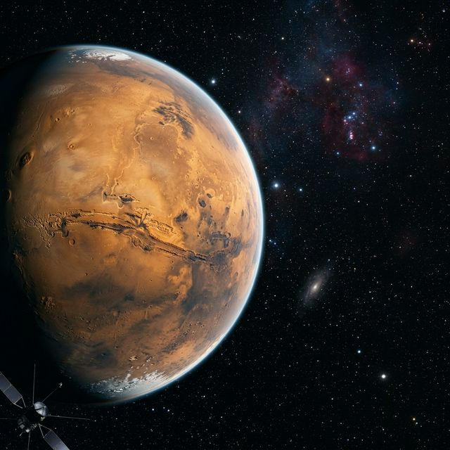

El Sistema Solar
El Sistema Solar és el sistema planetari que lliga gravitacionalment el Sol i els objectes que l'orbiten directament o indirectament. Entre aquests objectes es troben els vuit planetes majoritaris, planetes nans i milers d'altres cossos petits.
- Mercuri
- Venus
- Terra
- Mart
- Júpiter
- Saturn
- Urà
- Neptú
Anàlisi de Dades
| Dada | Valor |
|---|---|
| Massa | 6,39 × 10^23 kg |
| Volum | 1,63 × 10^11 km³ |
| Densitat | 3,93 g/cm³ |
| Diàmetre | 6.779 km |
| Gravetat | 3,711 m/s² |
| Paràmetre | Detall |
|---|---|
| Pressió | 0,636 kPa |
| T. Min | -153 °C |
| T. Max | 20 °C |
Arxiu Visual: Fobos i Deimos
Mart té dos petits satèl·lits naturals: Fobos i Deimos. A sota, imatges representatives de la missió.



Estructura Detallada
- Estructura interna: Mart té un nucli metàl·lic dens envoltat per un mantell de silicat.
- Geologia: Mart és un planeta tel·lúric amb cràters, volcans i deserts.
- Sòl: El sòl martià és ric en òxid de ferro, color vermell característic.
- Geografia: Unitats com el Valles Marineris.
- Atmosfera: Atmosfera tènue composta per CO2.